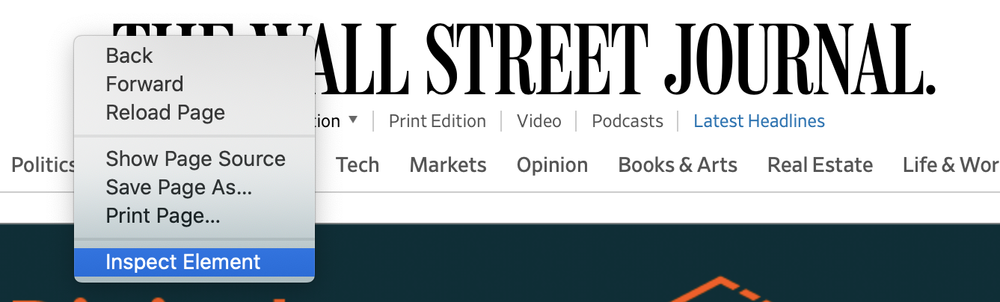
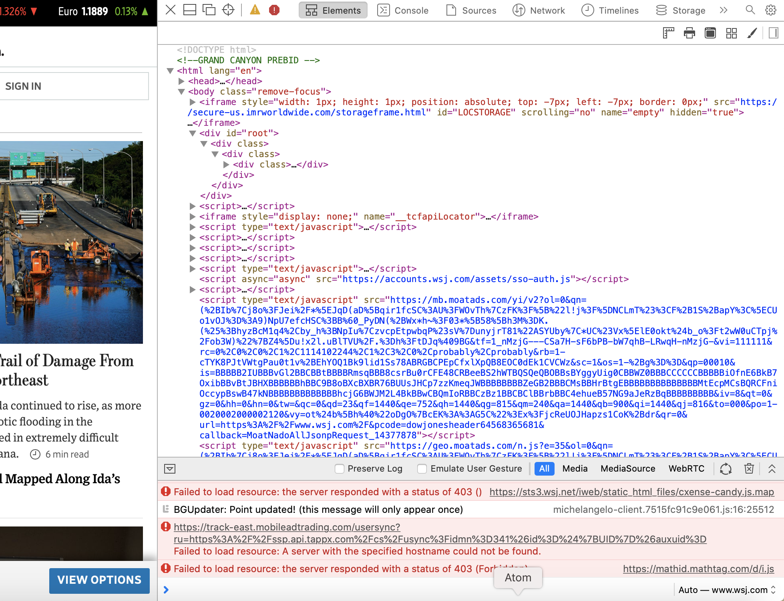

Open the browswer of your choice. I will be using Safari.
Pull up a site that you would like to inspect.
I'm using the Wall Street Journal.
On the webpage of your choice, right-click and
choose 'Inspect Element'. On Mac, for Safari, you can
also use the keyboard shortcut Option+Command+U. See Figure 1.
In doing so, you will have the Source Code come up on your screen. See Figure 2.

Figure 1: User is opening the webpage's source code by using the Inspect Element option.

Figure 2: Example of what the console looks like when it opens in a user's window. This example is from the Wall Street Journal's homepage console.